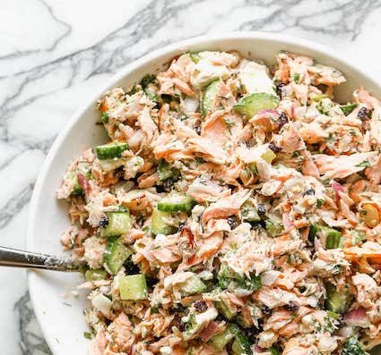

Salmon Salad Recipe
Ina Garten's well balanced summer salad is perfect for patio dining.
Wonderful with brioche, pumpernickle or pita.

Ingredients
- 32 oz cooked and chilled salmon
- 1 cup celery, diced finely
- 1/2 cup red onion, diced finely
- 2 tbsp minced fresh dill
- 2 tbsp capers, drained
- 2 tbsp raspberry vinegar
- 2 tbsp olive oil
- 1/2 tsp crushed salt
- 1/2 tsp freshly ground black pepper
- Other veggies of choice, diced finely. I tried cucumbers today.
Directions
- Add all ingredients except salmon, season to taste.
- Break the salmon into large flakes, free of skin and bones.
- Serve lightly chilled or at room temperature.
Return home